수능(국어영역) (2013-11-07 기출문제)
1. 대화의 흐름과 내용을 고려할 때， ©에 들어갈 말로 가장 적절한 것은?(1번 공통지문 문제)
- 네가 학생 회장으로서 학생들의 고민을 모두 해결해 줄 수 있는 적임자라는 것을 강조해 봐. 그러면 청중이 너의 자신감을 높이 살 거야.
- 네가 그동안 도움이 필요한 친구들을 많이 도와줬던 이야기를 해 봐. 그러면 청중은 네가 학생 회장에게 어울리는 따뜻한 마음이 있다는 걸 알게 될 거야.
- 네가 항상 앞에 나서서 적극적으로 학급 일을 주도해 왔다는 것을 강조해 봐. 그러면 청중은 네가 많은 학생들을 이끌 수 있는 학생 회장이 될 거라고 생각할 거야.
- 네가 임시 반장을 하며 만든 프로그램이 친구들의 호응을 얻지 못했던 이야기를 말하는 건 어때? 그 말에 청중은 네가 학생 회장에게 필요한 경험이 있다고 판단할 거야.
- 네가 학생 회장이 되면 다양한 동아리 활동의 기회를 제공 하겠다고 해 봐. 그러면 청중은 자신의 숨어 있는 재능을 발견할 수 있는 기회를 많이 갖게 될 거라고 기대할 거야.
(정답률: 40%)

2. 다음은 라디오 대담의 일부이다. 대담 참여자의 말하기 방식에 대한 설명으로 적절하지 않은 것은? [3점]
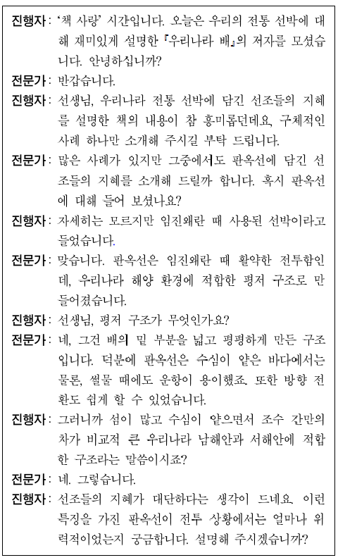
- 전문가는 진행자의 의견에 동조하며 자신의 견해를 수정하고 있다.
- 전문가는 진행자의 부탁에 따라 소개할 내용을 선정하여 제시 하고 있다.
- 진행자는 전문가의 설명에 대한 자신의 이해가 맞는지를 확인 하고 있다.
- 진행자는 전문가의 말에 나온 용어의 개념을 물음으로써 청취자의 이해를 돕고 있다.
- 진행자는 전문가에게 중심 화제와 관련된 추가 정보를 요구 하며 대담을 진전시키고 있다.
(정답률: 24%)
3. 위 발표에 대한 평가로 가장 적절한 것은?(4번 공통지문 문제)
- 청중의 응답을 이끌어 내고 반응을 확인하여 청중과의 상호 작용을 강화하였다.
- 발표 중간 중간에 그림들의 예술적 의미를 강조하여 청중의 이해를 도왔다.
- 사적인 상황에 걸맞은 호칭어를 사용하여 청중에게 친근감을 불러일으켰다.
- 도입부에서 화면을 통해 발표 순서를 안내하여 청중이 내용을 예측하며 듣도록 하였다.
- 발표의 핵심을 강조하는 비유적 표현으로 발표를 마무리하여 청중에게 강한 인상을 남겼다.
(정답률: 알수없음)
4. 윗글을 수정 • 보완하는 과정에서<보기>를 활용하는 방안으로 적절하지 않은 것은? [3점](6번 공통지문 문제)
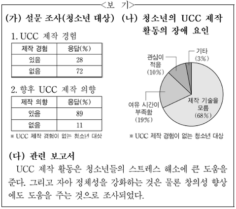
- (가)를 활용하여， 둘째 단락에서 언급한 상당수의 청소년들이 UCC 제작 경험은 없지만 앞으로 제작할 의향이 있다는 내용의 구체적 근거를 제시한다.
- (나)를 활용하여， 둘째 단락에서 언급한 UCC 제작 활동의 장애 요인들 중 제작 기술을 모르는 것이 가장 큰 요인이라는 점을 부각한다.
- (다)를 활용하여， UCC 제작 경험이 없는 학생들은 UCC 제작 경험이 있는 학생들과 달리 스트레스를 해소할 만한 수단이 없음을 셋째 단락에 추가한다.
- (가)와 (나)를 활용하여， 둘째 단락에서 언급한 UCC 제작 기술을 습득한다면 UCC 제작이 활성화될 수 있다는 판단의 구체적 근거를 제시한다.
- (가)와 (다)를 활용하여， UCC 제작 의향은 있으나 실제로 제작해 보지 못한 학생들이 향후 UCC를 제작하게 된다면 창의성 향상에도 도움이 될 수 있음을 셋째 단락에 추가한다.
(정답률: 28%)
5. 다음 [자료]를 읽고 [조건]에 맞게 쓴 글로 가장 적절한 것은?
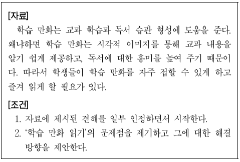
- 학습 만화가 재미있는 것은 사실이다. 하지만 쉽고 짧은 표현으로만 이야기가 전개되다 보니 다양한 어휘 습득이 어렵다.
- 학습 만화는 시각적으로 자극적인 장면이 많다. 그러므로 독자는 학습 만화에 담긴 내용을 비판적으로 수용하는 태도를 길러야 한다.
- 학습 만화가 교과 학습에 도움이 되기는 한다. 그러나 깊이 있는 학습을 하는 데는 한계가 있다. 따라서 같은 주제를 다룬 참고 도서를 폭넓게 읽도록 한다.
- 학습 만화는 학생들로 하여금 그림에만 집중하여 교과 내용을 단편적으로 이해하게 한다. 그러나 학습 만화는 교과에 대한 이해도를 높이는 좋은 방안이 된다.
- 학습 만화는 심화 과목 학습에 기초가 된다. 어려운 내용을 쉽게 전달하기 때문이다. 따라서 학습 만화를 통해 교과 지식을 넓힌다면 학업에 보탬이 될 수 있다.
(정답률: 25%)
6. ‘국어 사랑 동아리’ 친구들은 바르게 고쳐 주는 운동을 하고 의견으로 적절하지 않은 것은?(9번 공통지문 문제)
- ㉠: 피동 표현이 불필요하게 중복되었으므로 ‘강화된’으로 고쳐야 합니다.
- ㉡: 단어의 쓰임이 부적절하므로 기증’으로 바꿔야 합니다.
- ㉢: 자연스러운 연결을 위해 바로 뒤의 문장과 순서를 바꿔야 합니다.
- ㉣: 문맥상 부적절한 단어이므로 ‘필요한’으로 바꿔야 합니다.
- ㉤: 문단을 자연스럽게 연결해 주지 못하니 ‘그러나’로 고쳐야 합니다.
(정답률: 30%)
7. 다음 ㉠〜㉢의 음운 변동에 대한 설명으로 적절한 것은?
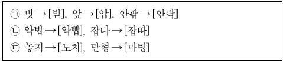
- ㉠과 ㉡은 음절 종성에 놓인 자음이 바뀌는 변동이다.
- ㉠은 거센소리를 예사소리로， ㉢은 거센소리를 된소리로 바꾸는 변동이다.
- ㉠과 ㉢의 변동이 모두 일어난 예로 ‘따뜻하다→[따뜨타다]’를 들 수 있다.
- ㉡과 ㉢의 변동은 뒤의 자음이 앞의 자음에 동화된 것이다.
- ㉡은 음운의 첨가에， ㉢은 음운의 축약에 속한다.
(정답률: 10%)
8. 다음은 ‘사전 활용하기， 학습 활동을 위한 자료이다. 이에 대해 탐구한 내용으로 적절하지 않은 것은?
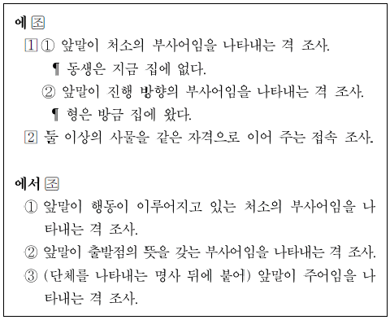
- ‘에’는 격 조사와 접속 조사로 쓰일 수 있는 반면， ‘에서’는 격조사로만 쓰이는군.
- ‘에의 용례로 “오늘 저녁은 밥에， 국에， 떡에 아주 잘 먹었다.”를 들 수 있겠군.
- 에서 ③’의 용례로 “우리 학교에서 사람들이 운동을 한다.”를 들 수 있겠군.
- ‘에①’의 용례에 쓰인 ‘에’는 ‘에서’로 바꿔 쓸 수 없군.
- ‘에
 ②’의 용례에 쓰인 ‘에’를 ‘에서’로 바꾸면 문장의 의미가 바뀌는군.
②’의 용례에 쓰인 ‘에’를 ‘에서’로 바꾸면 문장의 의미가 바뀌는군.
(정답률: 30%)
9. <보기>의 ㉠〜㉤에 대한 설명으로 적절하지 않은 것은? [3점]
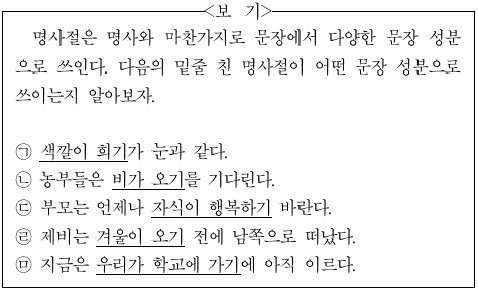
- ㉠: 명사절이 조사와 결합하여 주어로 쓰였다.
- ㉡: 명사절이 조사와 결합하여 목적어로 쓰였다.
- ㉢: 명사절이 조사와 결합하지 않고 목적어로 쓰였다.
- ㉣: 명사절이 조사와 결합하지 않고 부사어로 쓰였다.
- ㉤: 명사절이 조사와 결합하여 부사어로 쓰였다.
(정답률: 19%)
10. <보기>의 ㉠~㉤에 대한 설명으로 적절하지 않은 것은?
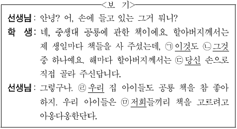
- ㉠은 대화 상황에서 눈에 보이는 대상, 곧 학생이 들고 있는 책을 가리킨다.
- ㉡은 앞서 언급한 대상, 곧 할아버지께서 사 주신 책들을 가리킨다.
- ㉢은 3인칭으로 사용되고 있다.
- ㉣은 청자를 포함하지 않는다.
- ㉤은 1인칭으로 사용되고 있다.
(정답률: 알수없음)
11. <보기>의 ㉠, ㉡이 모두 사용된 문장은?
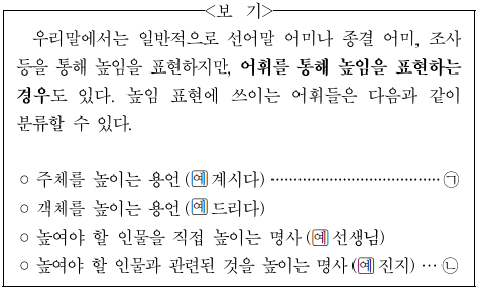
- 나는 아직 그분의 성함을 기억하고 있다.
- 누나는 여쭐 것이 있다며 할머니 댁에 갔다.
- 연세가 많으신 할머니께서는 홍시를 잘 잡수신다.
- 우리는 부모님을 모시고 바닷가로 여행을 떠났다.
- 어머니께서는 몹시 피곤하셨는지 거실에서 주무신다.
(정답률: 알수없음)
12. 윗글을 이해한 내용으로 가장 적절한 것은?(16번 공통지문 문제)
- 루비듐의 존재는 분광 분석법이 출현하기 전에 확인되었다.
- 빛을 프리즘을 통해 분산시키면 빛의 파장이 길수록 굴절하는 각이 커진다.
- 금속 원소 스펙트럼의 밝은 선의 위치는 불꽃의 온도를 높여도 변하지 않는다.
- 철이 태양 대기에 존재한다는 사실은 나트륨이 태양 대기에 존재한다는 사실보다 먼저 밝혀졌다.
- 분젠은 두 종류 이상의 금속이 섞인 물질에서 나오는 각각의 불꽃색이 겹치는 현상을 막아 주는 버너를 고안하였다.
(정답률: 알수없음)
13. 윗글을 바탕으로 <보기>를 해석한 내용으로 적절하지 쌓을 것은? [3점](16번 공통지문 문제)
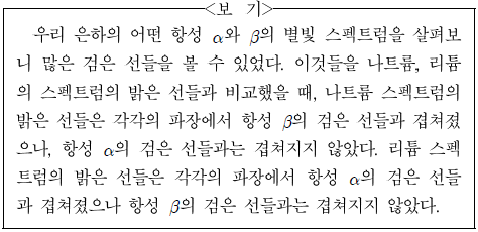
- 항성 α는 태양이 아니겠군.
- 항성 α의 별빛 스펙트럼에는 리튬이 빛을 흡수해서 생긴 검은 선들이 있겠군.
- 항성 β에는 리튬이 존재하지 않겠군.
- 항성 β의 별빛 스펙트럼에는 D선과 일치하는 검은 선들이 없겠군.
- 항성 β의 별빛 스펙트럼에는 특정한 파장의 빛이 흡수되어 생긴 검은 선들이 있겠군.
(정답률: 20%)
14. 윗글의 ‘승선교’와<보기>의 ‘옥천교’에 대한 이해로 적절하지 않은 것은? [3점](19번 공통지문 문제)
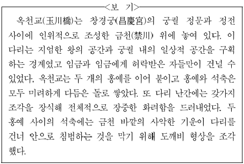
- 승선교와 달리 옥천교는 통행할 수 있는 대상에 제약이 있었던 것으로 보아， 권위적인 영역으로 진입하는 통로이겠군.
- 승선교와 달리 옥천교는 다듬은 돌만을 재료로 사용하고 난간에 조각 장식을 더한 것으로 보아， 장엄함을 드러내려는 의도가 반영된 것이겠군.
- 옥천교와 달리 승선교는 계곡 사이를 이어 통행로를 만든 것으로 보아， 자연의 난관을 해소하기 위한 것이겠군.
- 옥천교와 승선교는 모두 서로 다른 성격의 두 공간 사이에 놓인 것으로 보아， 이질적인 공간의 경계이겠군.
- 옥천교와 승선교는 모두 재앙을 막기 위한 장식을 덧붙인 것으로 보아， 세속을 구원하고자 하는 종교적 의식이 반영된 것이겠군.
(정답률: 알수없음)
15. 문맥상 Q)〜@을 바꿔 쓰기에 적절하지 않은 것은?(19번 공통지문 문제)
- ㉠: 쓰였다
- ㉡: 튼튼하게
- ㉢: 튀어나와
- ㉣: 그친다고
- ㉤: 주는
(정답률: 알수없음)
16. 윗글을 바탕으로 <보기>를 이해한 내용으로 적절하지 않은 것은?(22번 공통지문 문제)
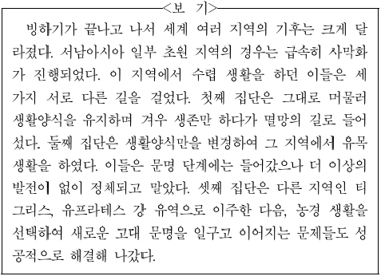
- 사막화는 서남아시아 일부 초원 지역 사람들이 당면했던 역경에 해당한다고 보아야겠군.
- 첫째 집단에서는 모방이 작용하는 방향이 선조들과 구세대를 향했다고 보아야겠군.
- 둘째 집단이 문명을 발생시킨 후 이 집단의 창조적 소수들이 계속된 새로운 도전들을 해결했다고 보아야겠군.
- 셋째 집단에서는 창조적 소수가 나타났고， 대중의 모방이 그들을 향했다고 보아야겠군.
- 셋째 집단은 생활 터전과 생활양식을 모두 바꾸는 방식으로 환경의 변화에 응전하여 문명을 발생시켰다고 보아야겠군.
(정답률: 19%)
17. 윗글을 통해 알 수 있는 내용으로 적절한 것은?(24번 공통지문 문제)
- 간접 광고에서 주변적 배치가 주류적 배치보다 더 시청자의 주목을 받는다.
- 간접 광고는 직접 광고에 비해 시청자가 즉각적으로 광고를 회피하기가 더 쉽다.
- 간접 광고가 삽입된 프로그램을 시청할 때에는 수용자 개인의 프레임이 작동하지 않는다.
- 직접 광고와 간접 광고는 광고가 시청자들에게 주는 효과의 정도에 따라 구분한 것이다.
- 간접 광고가 광고인 것을 시청자가 알아차리지 못하는 동안에도 광고 효과는 발생할 수 있다.
(정답률: 알수없음)
18. ㉠과 ㉡에 대하여 추론한 내용으로 적절하지 찰을 것은?(24번 공통지문 문제)
- ㉠이 시행되면서, 프로그램 내용이 전개될 때 상표를 노출할 수 있게 되어 방송 광고업계는 이 제도를 환영했겠군.
- ㉠에 따라 경비를 제공한 협찬 업체는 프로그램이 종료될 때의 협찬 고지를 통해서 광고 효과를 거둘 수 있겠군.
- ㉡이 도입된 이후에는 프로그램 내용이 전개될 때 작위적으로 상품을 노출시키는 장면이 많아졌겠군.
- ㉡을 도입할 때 보도와 토론 프로그램에서 간접 광고를 허용하지 않은 것은 방송의 공적 특성을 고려한 것이겠군.
- ㉠에 따른 광고와 ©에 따른 광고 모두 맥락 효과를 얻을 수 있겠군.
(정답률: 10%)
19. 윗글을 바탕으로 <보기>를 이해한 내용으로 적절하지 않은 것은?(24번 공통지문 문제)
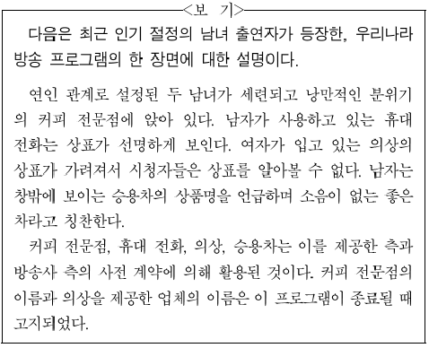
- 남자가 사용하는 휴대 전화의 제조 회사는 간접 광고의 주류적 배치를 활용하고 있군.
- 여자가 입고 있는 의상을 제공한 의류 회사는 간접 광고의 주변적 배치를 활용하고 있군.
- 이 프로그램에는 협찬 제도에 따른 광고와 간접 광고 제도에 따른 광고가 모두 활용되고 있군.
- 남자가 승용차에 대해 말하는 내용으로 보아 이 방송 프로그램은 현행 국내법을 위반하고 있군.
- 방송 후 화면 속의 배경이 된 커피 전문점에 가려고 그 위치를 문의하는 전화가 방송사에 쇄도했다면 간접 광고의 맥락 효과가 발생한 것이군.
(정답률: 알수없음)
20. 윗글을 이해한 내용으로 적절하지 않은 것은?(28번 공통지문 문제)
- CD에 기록된 정보는 중심에서부터 바깥쪽으로 읽어야 하겠군.
- 레이저 광선은 CD 기록면을 향해 아래에서 위쪽으로 조사되겠군.
- 광 검출기에서 네 영역의 출력값의 합은 피트를 읽을 때보다 랜드를 읽을 때 더 크게 나타나겠군.
- 렌즈의 초점이 맞지 않으면 광 검출기의 전 영역과 후 영역의 출력값의 차이를 이용하여 보정하겠군.
- CD의 고속 회전에 의한 진동으로 인해 광 검출기에 조사된 레이저 광선의 모양이 길쭉해질 수 있겠군.
(정답률: 알수없음)
21. 윗글을 바탕으로 <보기>에 대해 설명한 내용으로 적절한 것은? [3점](28번 공통지문 문제)
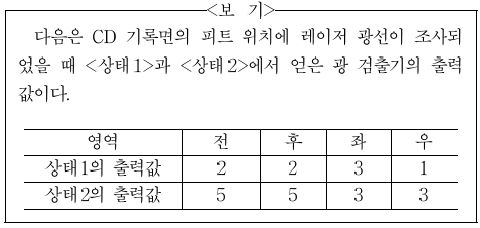
- 광 검출기에 조사되는 레이저 광선의 총량은 <상태 1>보다 <상태 2>가 작다.
- <상태 1>에서는 초점 조절 장치가 구동되어야 하지만，<상태 2>에서는 구동될 필요가 없다.
- <상태 1>에서는 트래킹 조절 장치가 구동될 필요가 없지만， <상태 2>에서는 구동되어야 한다.
- <상태 1>에서는 레이저 광선이 트랙의 오른쪽에 치우쳐 조사 되고，<상태 2>에서는 가운데 조사된다.
- <상태 1>에서는 포커싱 렌즈와 CD 기록면의 사이의 거리를 조절할 필요가 없지만， <상태 2>에서는 멀게 해야 한다.
(정답률: 알수없음)
22. ㉠〜㉤에 대한 이해로 가장 적절한 것은?(31번 공통지문 문제)
- ㉠은 이별에 직면한 화자가 겪고 있는 내적인 방황을 드러내고 있다.
- ㉡은 이별을 감내하면서도 지나간 사랑에 연연해하고 있는 화자의 회한을 드러내고 있다.
- ㉢은 이별의 고통으로 인하여 삶의 목표를 상실하고 번민에 가득 차 있는 화자의 상황을 표현하고 있다.
- ㉣은 이별의 경험이 내적 충만으로 이어지리라는 화자의 기대감을 계절의 의미에 빗대어 표현하고 있다.
- ㉤은 이별로 인한 상실감을 잊고 과거의 삶으로 회귀하는 화자의 태도를 표현하고 있다.
(정답률: 9%)
23. <보기>를 참고하여 윗글을 감상한 내용으로 적절하지 않은 것은?(31번 공통지문 문제)
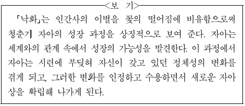
- 제1연과 제3연의 ‘가야 할 때’는 이전과는 달라진 상황을 인식한 때라는 점에서， 새로운 자아의 모습을 찾게 되는 계기라고 할 수 있군.
- 제2연의 ‘봄 한철’과 제5연의 ‘꽃답게 죽는다’는 청춘기의 열정을 비유하고 있다는 점에서， 시련에 부딪혀 열정을 잃어 가는 자아의 모습을 보여 준다고 할 수 있군.
- 제3연의 ‘결별이 이룩하는 축복에 싸여’는 이별의 결과에 대한 긍정적인 의미를 담고 있다는 점에서， 변화의 수용이 자아 성장의 과정으로 이어질 수 있음을 알 수 있군.
- 제6연의 ‘헤어지자/섬세한 손길을 흔들며’는 이별을 수용하는 모습을 표현하고 있다는 점에서， 세계와의 관계가 변화되었음을 인정하려는 자아의 태도를 보여 준다고 할 수 있군.
- 제7연의 ‘내 영혼의 슬픈 눈’은 화자가 자신을 성찰하고 있음을 보여 준다는 점에서， 시련을 통해 새로워지는 자아상을 확립해 나가는 것임을 알 수 있군.
(정답률: 10%)
24. ‘어머니’와 관련하여 ㉠〜㉤을 이해한 내용으로 적절하지 않은 것은?(34번 공통지문 문제)
- ㉠: 사건에 대한 ‘어머니’의 심리적 반응을 행동으로 구체화하고 있다.
- ㉡: ‘어머니’가 처한 현실과 상반된 지명이 현실의 모순을 부각하고 있다.
- ㉢: ‘어머니’에게 닥친 문제가 구체적으로 무엇인지 드러내고 있다.
- ㉣: 생활의 의지마저 포기한 ‘어머니’의 절망적인 모습을 보여주고 있다.
- ㉤ : ‘어머니’의 고조된 음성이 상황의 절박함을 암시하고 있다.
(정답률: 10%)
25. <보기>를 바탕으로 윗글을 감상한 내용으로 적절하지 않은 것은? [3점](34번 공통지문 문제)
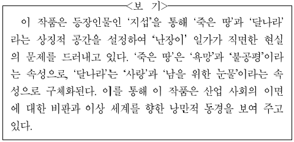
- ‘불공평’을 ‘죽은 땅’의 속성으로 볼 때， ‘공고문’은 불평등한 현실의 문제를 들춰내는 소재이겠군.
- ‘욕망’을 ‘죽은 땅’의 속성으로 볼 때， ‘난장이’ 가족의 어려움은 ‘욕망’으로 가득한 현실에서 비롯되었다고 할 수 있겠군.
- ‘달나라’가 ‘죽은 땅’과 대조되는 것으로 볼 때， ‘달나라’에 대한 동경은 ‘죽은 땅’에 대한 ‘지섭’의 비판적 인식을 포함한다고 할 수 있겠군.
- ‘사랑’을 ‘달나라’의 속성으로 볼 때， ‘지섭’은 자신의 욕망만 앞세우는 사람들이 사는 ‘죽은 땅’에서는 ‘사랑’을 기대할 수 없다고 생각하겠군.
- ‘남을 위한 눈물’을 ‘달나라’의 속성으로 볼 때， ‘지섭’은 ‘난장이’가 주어진 현실의 삶에 충실하지 못했기에 그를 위해 눈물을 흘려 줄 사람을 만나지 못한 것이라고 생각하겠군.
(정답률: 0%)
26. ⓐ의 상황을 나타내는 말로 가장 적절한 것은?(34번 공통지문 문제)
- 유구무언(有口無言)
- 일구이언(一口二言)
- 중구난방(衆口難防)
- 진퇴양난(進退兩難)
- 횡설수설(横說翌說)
(정답률: 알수없음)
27. (가)， (나)에 대한 이해로 적절하지 않은 것은?(38번 공통지문 문제)
- (가)의 ‘천만리(千萬里) 머나먼 길에 고운 님 여의옵고’는 과장된 표현을 통해 ‘님’과 이별한 상황을 강조하고 있다.
- (가)의 ‘저 물도 내 안 같아서’는 인간과 자연물의 동일시를 통해 화자의 슬픔을 표현하고 있다.
- (가)의 ‘밤길 가는구나’는 캄캄한 ‘밤’의 속성을 통해 화자의 암담한 심경을 표현하고 있다.
- (나)의 ‘홍안(紅顔)을 어디 두고 백골(白骨)만 묻혔느냐’는 시어의 대비를 통해 화자의 무상감을 드러내고 있다.
- (나)의 ‘잔(蓋) 잡아 권(勸)할 이 없으니’는 각박한 세태의 제시를 통해 속세에서 벗어나고자 하는 염원을 드러내고 있다.
(정답률: 알수없음)
28. (다)와 <보기>를 비교하여 감상한 내용으로 적절하지 않은 것은? [3점](38번 공통지문 문제)
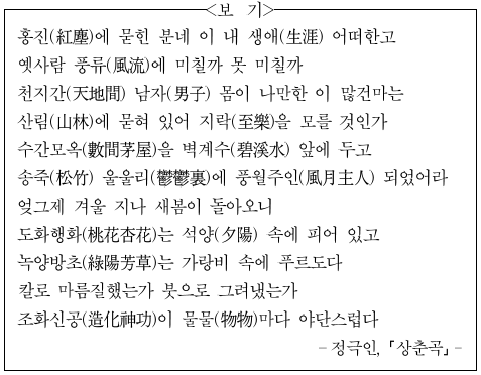
- (다)와 <보기>는 동일한 음보율을 사용하여 리듬감을 살리고 있군.
- (다)는<보기>와 달리 이질적 공간을 대비하여 주제를 드러내고 있군.
- (다)에서는 침울한 분위기를， <보기>에서는 들뜬 분위기를 느낄 수 있군.
- (다)의 ‘석양， 은 화자의 정서를 심화하는 배경으로， <보기>의 ‘석양’은 경치를 돋보이게 하는 배경으로 기능하고 있군.
- (다)는 화자가 혼잣말을 하는 방식으로， <보기>는 화자가 청자에게 말을 건네는 방식으로 자신의 내면을 드러내고 있군.
(정답률: 알수없음)
29. [A]에 대한 이해로 가장 적절한 것은?(41번 공통지문 문제)
- 부친의 삼년상을 길동이 영웅들을 모아 함께 치르는 과정에서， 길동과 부하들 간의 유대감이 공고해지고 있다.
- 부친의 생전에 호부호형을 허락받았던 길동이 부친의 사후에는 산소를 모시게 됨으로써， 자식으로서의 지위가 강화되고 있다.
- 부친을 운구하는 일에 많은 사람들이 엄숙하게 참여함으로써， 부친의 평소 넓은 인간관계가 사회적 차원에서 확인되고 있다.
- 부친을 산소에 모시는 자리에 모부인이 참석하였다는 점에서， 부친 사후 모부인을 중심으로 길동의 가족 관계가 재편되고 있다.
- 부친을 위해 좋은 터를 마련하고자 지술을 배운 길동을 모친이 염려하는 데서， 주술을 용인하지 않으려는 가족의 태도가 드러나고 있다.
(정답률: 0%)
30. <보기>를 참고하여 윗글을 감상한 내용으로 적절하지 찰을 것은? [3점](41번 공통지문 문제)
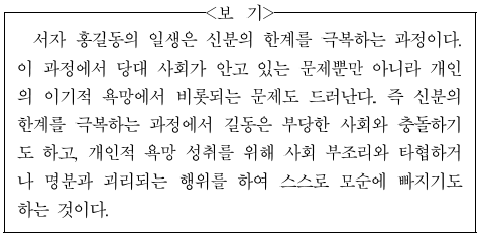
- 비범한 능력을 가지고 있음에도 천한 종의 몸에서 태어났다는 이유로 길동의 벼슬길이 막히는 것을 보면， 당대 사회가 인재를 등용하는 데에 폐쇄적이었음을 알 수 있어.
- 신분 차별에 저항했던 길동이 벼슬을 받자 자신의 행적을 ‘죄’라고 부르는 것을 보면， 길동이 욕망 성취 과정에서 당대의 사회 제도와 타협하고 있음을 알 수 있어.
- 봉건 체제의 상징인 임금이 당대 사회 제도의 부당함에 공감 하여 길동의 재주를 칭찬하는 것을 보면， 당대 사회가 개인의 이기적인 욕망을 제도적으로 승인하고 있음을 알 수 있어.
- 분란을 일으킨 길동에게 임금이 벼슬을 내려 길동의 불만을 달랠 뿐 그 근본 원인은 해소하지 않는 것을 보면， 당대 사회가 사회 문제를 해결하는 데에 한계가 있었음을 알 수 있어.
- 길동이 율도국을 침략하여 ‘살기 좋은 나라’를 위기에 빠뜨리면서도 스스로를 ‘의병장’이라 부르며 침략을 정당화하는 것을 보면， 길동의 욕망 성취 과정에서 행위와 명분 사이에 괴리가 있음을 알 수 있어.
(정답률: 알수없음)
31. <보기>를 참고하여 윗글을 감상한 내용으로 가장 적절한 것은?(44번 공통지문 문제)
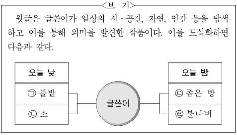
- ㉠이 권태에 빠진 글쓴이 에게 충족감을 주는 안식처라면, ㉢은 나태한 삶을 피해 은신한 글쓴이에게 도피처를 의미하겠군.
- 글쓴이는 ㉠에서 자신의 무기력한 삶의 원인을 찾아 고뇌하다가 마침내 그 원인을 ㉡에서 찾고 자신의 처지를 한탄하고 있군.
- 글쓴이는 ㉢이라는 삶의 공간에서 ㉣에 주목하여 아무런 목표 없이 살아가는 자신의 현실 대응 방식을 반성하고 이를 개선하겠다고 다짐하고 있군.
- 글쓴이는 ㉡을 통해 자신이 권태에 빠진 고독한 존재임을, ㉣을 통해서는 열정 없이 살아가는 존재임을 확인하고는 권태가 지속될 내일을 두려워하고 있군.
- 글쓴이는 의미 없는 일상을 반복하고 있는 자신이 ㉡, ㉣과 다를 바 없다고 규정하고 권태에서 벗어나려는 의욕마저 갖지 못하게 하는 현실에 대해 안타까워하고 있군.
(정답률: 0%)